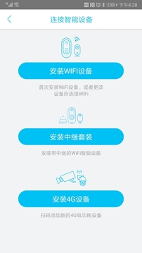

那个蹲在楼道里配网的傍晚，我终于把太阳能摄像机连上了家
加班到八点回家，门口躺着一个陌生快递盒——不知道是我自己的还是邻居的，瞬间决定装个 WiFi 摄像机。从选 App 到配网踩坑到终于能远程看家门，整个过程比想象中曲折得多。
上周二加班到八点半，推开单元门的时候脚边躺着一个京东快递盒，上面没写名字。我蹲在楼道里盯着那盒子愣了半分钟——最近小区群里在说单元门的门禁坏了好几天，什么人都能进。我租的房子在三楼，正好对着单元门的角度，装个摄像机应该能覆盖到。
回家翻了两三个 App Store 里的监控类应用，界面花里胡哨的不少，但一看评论全是"连不上""黑屏""云存储要另收费"。正纠结的时候，在一个数码论坛的帖子里看到有人推了 ybox——说他家那款太阳能 WiFi 摄像机就是用这个客户端，配网简单、不强制买云存储。我去 ybox官网 看了下，界面确实干净，支持太阳能板和电池款，还有可视门铃。那就从 ybox下载 下一个试试。
下载装好 ybox 之后，第一步是配网。我拿起摄像机说明书才发现，太阳能款还不能直接配网——得先晒十分钟，或者用 Type-C 线临时充一下，不然设备蓝灯不亮。我翻出一根旧的 Type-C 线把摄像机接上电源，等了大概五分钟，蓝灯开始快速闪烁，像心跳一样。
按 App 里的引导流程，先选"安装 WiFi 设备"，然后弹出二维码扫描界面。这里踩了第一个坑：我手机连着 5G WiFi 扫了半天，App 一直提示"不识别"或者"无法连接"。后来去 ybox文档 翻了一下才明白——所有户外低功耗摄像设备都只支持 2.4 GHz 频段，5G 根本连不上。我家路由器是双频合一的，WiFi 名全一样，只能先去路由器后台把 2.4G 和 5G 拆成两个独立名字，手机手动切到 2.4G 那个，再扫一遍就过了。
扫码成功之后 App 自动读取了我手机当前的 WiFi 名，只需要输入密码——这里又踩了第二个坑，我 WiFi 密码有特殊字符，第一次输错了一个，App 一直在转圈转圈，设备蓝灯也从快闪变成常亮又变回快闪。后来杀掉 App 重开，手机确认连的还是 2.4G，重新扫码重输密码，才终于听到摄像机发出"连接成功"的语音提示，蓝灯长亮。

这之后用了快一周，ybox 的几个功能是真的顺手。
最常用的就是实时预览界面的抓图。App 把摄像机装好之后，我每天早上出门前都用手机打开看一眼门口有没有什么异常。上周有天晚上我在公司加班，手机突然弹出推送说门口有人，我点开预览画面——是个快递小哥在放包裹，我点右下角那个相机图标，"咔嚓"一声，画面就存到手机相册了，同时 App 自己的相册 Tab 里也有一份。回家之后我用这张图给快递员发了消息确认他来过，他还挺惊讶的，说"你这摄像机反应挺快啊"。
不过有天也碰过一次黑屏。那天我在地铁上想看看家附近情况，点开 App 发现画面一直在转圈，转了快二十秒还没出来，设备状态也显示在线但电量信号都在刷新。我差点以为摄像机坏了。后来切了一下分辨率——从 HD 切到 SD，画面居然立刻出来了。估计是地铁里蜂窝信号不够，HD 带宽不够导致卡着。那之后我养成了个习惯，远程看的时候如果 HD 加载慢，先切 SD 试试，大部分情况能立刻恢复。
录像回放也分两种路径，我一开始没搞清楚。TF 卡本地回放和云存储回放，走的网络通道完全不一样。在家的时候直接点 TF 卡回放，走家里局域网，速度快不耗流量，查刚刚发生的事延迟最低。但上次我出差在外，手机用的是蜂窝网络，TF 卡回放要么耗设备流量要么连不上——因为摄像机和家里 WiFi 相连，我在外网要远程读 TF 卡里的录像，得通过设备的回传通道，走的是设备那边的流量。那次我才明白，出门在外查录像要么订阅云存储，要么干脆回家再看。
说回那个周二晚上的快递。后来我在 ybox 里开了事件抓拍，只要门口有人经过，自动抓一张图存到云端（我选的是免费的循环存储档位）。第二天早上出门，我用 App 回放了前一天晚上的事件片段——确实是快递小哥放在那的，旁边还站了个邻居在找自己的快递，两个人差点拿错。我截了图发到小区群里问了一声，邻居出来认领，皆大欢喜。
现在摄像机已经装了快半个月，没再出过配网那种问题。唯一要注意的是太阳能板得定期擦一下灰——上周北京刮了一场大风，我下班发现设备离线，蓝灯不亮电量显示 0%，太阳能板被一层沙尘盖得严严实实，搬到阳台晒了半小时才恢复。
一个几百块的太阳能摄像机，加一个干净不耍流氓的客户端，解决了我一个上班族看家的核心诉求。配网踩过的那两个坑（5G WiFi、密码输错），现在想想都是设备本身的硬限制，不是 App 的锅。ybox 在这些地方其实做得够实在——不会偷偷让你订阅云存储，不会强制开推送，权限该要的才要。关于这款软件的资料整理，我同步在了 GitHub、Gitee 和 GitCode 三个平台，国内外访问都方便。如果你也在犹豫要不要装一个户外摄像机，我觉得先把 WiFi 频段的事搞明白，比挑什么品牌更重要。